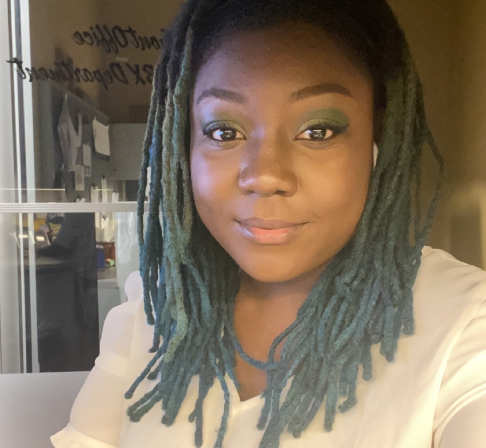

Hello, my name is Khadine Wright :)
I am a software engineer that develops in Atlanta, GA.
I have a few interests that include:
- Web Development
- App Development
- Cloud Computing
- 3D Printing
Get To Know Me
I am a student pursuing a degree in Computer Engineering. My passion for web development began in high school when I took a STEM program over the summer at Morehouse College. There I worked with other high school students doing assigned projects. During college, I was introduced to many assests of tech but stayed interested in web development. As a student at Thinkful, I hope to tune into web/app development and become a fully equipped software developer to work in the industry.
Outside of developing software, I have interest in cloud computing. With an increase of IOT and technology use, cloud computing is becoming high in demand.
Find Me Here
Need to reach me? Please feel free to find me here: